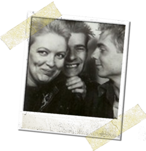

Once upon a time...there
was a little girl who dreamed of becoming an artist. She would spend hours
drawing pictures of her cat, Myshkin, and house plants and, well... just
about anything that would be still for long enough. Her favourite medium
was felt tipped pens. She also liked making collages and glueing stuff onto
sugar paper.However, before her discovery of felt tipped pens, L'il Cat worked
exclusively in crayon - as always drawing from life - see 'Mummy Chasing
Daddy' - aged 4 (right). She also liked colouring in, particularly abstract
and geometric patterns. With little girls, it’s always the same
artistic route from crayons and chalk to felt-tipped pens; the pens’ neat
and satisfying newness enabling bright and stripy works of art. Too soon followed
by desperate licking at their felty ends to extract the final dregs of colour
until the nibs splay, exhausted and dry – then discarded. Realising that,
by becoming an artist might she might not have to find a proper job, Cat became an art skool flunky. She waved a two fingered goodbye to
school and started a Foundation Course at Art College. Being a smart girl, she
used her time at Art College wisely. She forwent the usual student vices of
sex, drugs and a poor diet. Instead she worked hard and keenly and, after four
years, 
annie qualified as an Industrial Designer (Distinction).
Hurrah for Cat. However, her natural indolence rose to the fore and, exhausted
after her Art College toil, she went straight on the dole, rejecting the world
of work and choosing instead to hang out with her dole dependant friends making
cine films, going to the launderette and posing around the streets of Southsea
in her Ford Anglia. However, nothing entertained her more than fecking about
with her appearance and, particularly her hair.
It was an art installation... Alas, our heroine could not avoid employment forever
and, faced with the prospect of keeping herself warm for the winter, she chose
instead to enter the world of work so her employer could pick up the heating
tab. Here are some of the jobs she has done:
Still, it's not all been such a terrible grind working for The Man. There have been some opportunities for self-employment and self expression.
Cat has explored a variety of mediums with success – applying herself to sewing, furniture design and manufacture, stained glass window making, wood turning and parquetry, archaeological replica making, hairdressing and knitting, ceramics and web design.
Cat never disregards her Art School background and, even
in her current administrative job, there are plenty of opportunities for artistic
self-expression, plus her extra-curricular arty activities. Cat has recently
returned to Art College and is enjoying studying on HNC Graphic Communications
course - learning all about 2dimensional design and illustration. Check out
Cat's 2D work by clicking on the PinkEye Graphics logo.